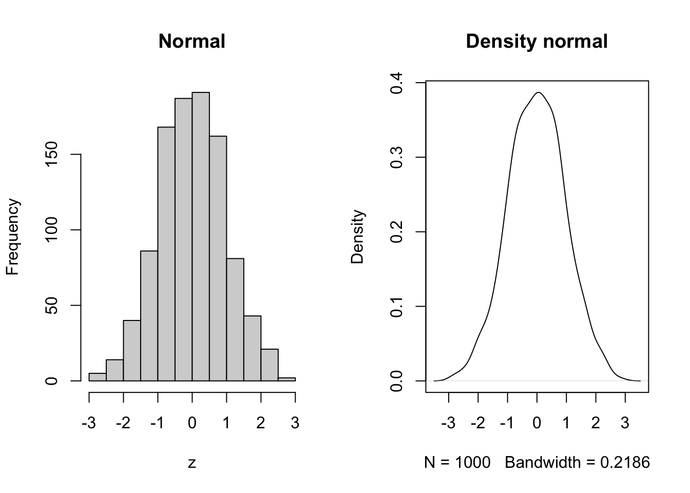
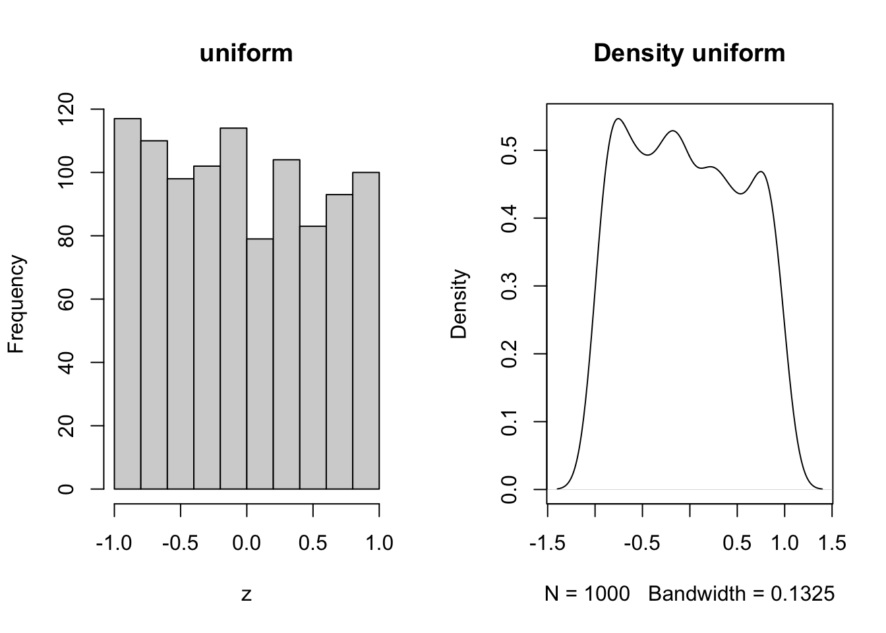

Chapter 2 Applying the Scientific Method
2.1 Program R
2.1.1 Introduction to R
Program R is a robust statistical modeling software widely adopted and freely available. R is a full fledged computer language with sophisticated data structures. It is created by statisticians as an interactive environment for data analysis, allowing for both interacting with data in an exploratory maneer while maintaining the critical aspects of reproducibility. These scripts serve as a permanent record for analysis you have performed, allowing for quick re-execution at any moment or the incorporation of new data. If you are patient, you will find the unequaled attractiveness and power of R for both data analysis and visualization.
Attractive features of R include:
- Free and open source
- Runs on all major platforms, including Windows, MacOS, LINUX
- Script sharing is easy across platforms
- Large and active community of users, including plethura of new libraries implementing the latest methods
- Easy to publish and distribute new methods.
2.1.2 Why not use R?
Using R is strongly recommended in this class. It is a powerful tool that can manage some of the most taxing of statistical methods, is free, and many times more capable than software that costs many thousands of dollars per user license. It is used extensively by both academia and industry, including tech giants like Amazon and Google. While it is possible to do any of these things in programs like SAS, JMP, SPSS, or even Excel, they are not free, they can be clunky to use, and you will have to figure it out on your own as I haven’t used those softwares in many years. Thus, I would very much encourage you to give R a shot.
2.2 Using R
2.2.1 Installing R
To use R, follow the following steps.
- Go to Program R’s website (https://www.r-project.org)
- Select the Download R link, select your prefered CRAN mirror (I typically pick Iowa State, here is a link directly to that mirror https://mirror.las.iastate.edu/CRAN/)
- Select the version for your machine (Windows, Mac etc.)
- Open the install engine and follow the steps.
Opening R should show you the R console, which looks something like this:
This is powerful, but likely not as approachable as you would like. To address this, I strongly recommend using an IDE (Integrated Development Environment) which serves to put all of the best features of a programming languange at the forefront. For R, there are many, includinge VSCode, Jupyter Notebooks, and RStudio.
I recommend RStudio, and will be using it throughout the course. 1. Go to the link for RStudio (https://posit.co/download/rstudio-desktop/) and download the appropriate Rstudio for your computer. 2. Run the install engine, which should go find your installation of R.
!! You must install R first, then RStudio !!
2.2.3 Installing packages
Now that you have R installed, you have access to basic functions and that come with the program. However, the power of R comes from the collaborative nature of the R community, and you will find that there are packages which you use all the time. Here is how to download and install packages using a set of packages that I find extremely useful. These packages are documented and maintained on R’s repository, meaning they have gone through rigourous checks to ensure they work with the current versions of R, and have published documentation for their methods and functions.
# install.packages("data.table") # installs one package at a time.
# or you can install a bunch of packages at one time
# Libraries to install
packages <- c("data.table", "tidyverse", "MCMCvis", "ggExtra", "devtools")# List of packages to check/install
# Function to check and install packages
install_if_missing = function(pkg) { #Create function command
if (!require(pkg, character.only = TRUE)) { # list of functions to iterate over
install.packages(pkg, dependencies = TRUE) # install packages command for each package in list
library(pkg, character.only = TRUE) # Load each package in the list using the library function
} else {
cat(paste("Package", pkg, "is already installed.\n")) # If package is installed already skip and report
}
}
# Apply the function to each package in the list
lapply(packages, install_if_missing) # Run install packages command created above## Loading required package: data.table## Package data.table is already installed.## Loading required package: tidyverse## ── Attaching core tidyverse packages ──────────────────────── tidyverse 2.0.0 ──
## ✔ dplyr 1.1.4 ✔ readr 2.1.5
## ✔ forcats 1.0.0 ✔ stringr 1.5.1
## ✔ ggplot2 3.5.2 ✔ tibble 3.2.1
## ✔ lubridate 1.9.4 ✔ tidyr 1.3.1
## ✔ purrr 1.0.4
## ── Conflicts ────────────────────────────────────────── tidyverse_conflicts() ──
## ✖ dplyr::between() masks data.table::between()
## ✖ dplyr::filter() masks stats::filter()
## ✖ dplyr::first() masks data.table::first()
## ✖ lubridate::hour() masks data.table::hour()
## ✖ lubridate::isoweek() masks data.table::isoweek()
## ✖ dplyr::lag() masks stats::lag()
## ✖ dplyr::last() masks data.table::last()
## ✖ lubridate::mday() masks data.table::mday()
## ✖ lubridate::minute() masks data.table::minute()
## ✖ lubridate::month() masks data.table::month()
## ✖ lubridate::quarter() masks data.table::quarter()
## ✖ lubridate::second() masks data.table::second()
## ✖ purrr::transpose() masks data.table::transpose()
## ✖ lubridate::wday() masks data.table::wday()
## ✖ lubridate::week() masks data.table::week()
## ✖ lubridate::yday() masks data.table::yday()
## ✖ lubridate::year() masks data.table::year()
## ℹ Use the conflicted package (<http://conflicted.r-lib.org/>) to force all conflicts to become errors## Package tidyverse is already installed.## Loading required package: MCMCvis## Package MCMCvis is already installed.## Loading required package: ggExtra## Package ggExtra is already installed.## Loading required package: devtools
## Loading required package: usethis## Package devtools is already installed.## [[1]]
## NULL
##
## [[2]]
## NULL
##
## [[3]]
## NULL
##
## [[4]]
## NULL
##
## [[5]]
## NULLHowever, the beauty of R is that anyone can publish a package to serve there purposes, encapsulate their methods, or share their ideas. And that is what I have done to facilitate sharing data within this course. Please load the package below to install the example datasets which will be used throughout this course. I may add datasets as we go, and will tell you if you need to update to the most current version of this package. If so, simply rerun the code below in your R console. I built the following package, and it is available on my github in the qthink repository.
devtools::install_github("irap93/qthink") # install a package from github using hte devtools package## Using GitHub PAT from the git credential store.## Skipping install of 'qthink' from a github remote, the SHA1 (74bb766d) has not changed since last install.
## Use `force = TRUE` to force installationNow, we need to load our packages. Loading packages is accomplished through the library() command in your r console or rscript.
library(qthink) # laod packages one by one using the "library" command
library(data.table)
library(tidyverse)Or, you can load them all at once like this using a for loop, which cycles through each package, checks if its installed and loaded
2.2.4 Loading data into the R environment
There are numerous ways to load data into R using a number of different libraries. For this lesson, we will be using the data in qthink library to illustrate how to save data and reload it using base R.
# load the heifer dataset from the qthink package
data("heifer") # Load the heifer data from the qthink package
head(heifer) # Look at the heifer data
# Save it to your workspace, change out the file path name to reflect your computer
write.csv(heifer, file = '/Users/iraparsons/Documents/AS791_FundQuantThink/Data/heifer.csv') # Save the data to your machineNow go look in your folder to see if a csv file was saved. Open it up and look at it.
Now lets reload it into the workspace. You can load csv files you create from excel workbooks to load your personal data into R in the same fashion.
heifer1 = read.csv(file = '/Users/iraparsons/Documents/AS791_FundQuantThink/Data/heifer.csv') # Example of how to read the file back into Did a new data file named heifer1 show up in your R environmnent? If so, you have been sucessfull. Now, lets explore the data a bit.
2.3 Exploratory Data Analysis and Graphics
If you know about your data, as in you collected it for your research project, you probably already know what everything represents. But in this case, we need to look at the description of the data. I saved metadata describing this dataset in the package, which we can see by running the following queries.
help(heifer) # Look at the help and documentation material for the heifer data
help("bodyweight") # Look at the help and documentation material for the bodyweight data set.The study description should appear in the lower right pane under the ‘help’ tab.
When approaching a data set, it is important to do due diligence and ensure that a complete understanding of the data is achieved before further analysis or publication is undertaken. This can be achieved in a number of ways, which will be enumerated below. As with any analysis, an understanding of the studies experimental design is critical to understanding what values may be expected within the data sheet, and will lend insight into what potential analysis may be conducted.
When opening a data set, it is important to have an understanding of what to expect. This includes such things as the study design and description, and the meta-data associated with the data sheets. Meta data, at the very least, should include descriptions of the column names, and indicate the type of data you might expect to be within. It may also include information concerning individual observations, such as animals that died or were pulled from the study, why they might have been pulled, and other factors that should be considered when analyzing the data.
File and column names should be kept as simple, yet descriptive, as possible. Use well known naming conventions, and avoid the use of spaces, instead using underscores or dots, though dots should be avoided as they are action symbols in python. You will quickly understand the value of having well conceived naming conventions for things you will type a lot, such as the names of columns and data frames. As we go through the class, you will likely notice some of the naming conventions that I have adopted. Feel free to use and adopt these for you own use. You will undoubtedly find a specific style which better suits your specific fancy and needs, but I think it is important that you do adopt a style for your own sanity.
2.3.1 Summary Statistics
We might first want to know some basic information about the dataframe we’ve loaded.
How many rows are in the dataframe by running nrow(heifer)
Second, it might be important to know what our column names are names(heifer)
Second, we might be interested in what animals are in the dataframe, which we can see by running unique(heifer$VID)
When approaching a dataset, it is important to understand what we have. Now that we know how the data was collected, we need to consider the data structure.
## spc_tbl_ [77 × 21] (S3: spec_tbl_df/tbl_df/tbl/data.frame)
## $ VID : num [1:77] 248 249 276 298 322 346 364 367 453 472 ...
## $ Pen : num [1:77] 8 8 6 6 8 6 5 7 6 5 ...
## $ CreepTrt : chr [1:77] "A" "A" "B" "B" ...
## $ WeanTrt : chr [1:77] "A" "A" "A" "A" ...
## $ D_42_BW : num [1:77] 261 210 177 198 198 ...
## $ Creep_Gain : num [1:77] 34.5 23.1 29 30.8 34.5 ...
## $ Shipping_Loss : num [1:77] -5.44 -4.54 -3.63 -6.8 -3.63 ...
## $ Day56_InitialBW: num [1:77] 287 223 200 218 233 ...
## $ Day56_ADG : num [1:77] 1.218 0.946 1.147 1.064 1.298 ...
## $ Day56_MMBW : num [1:77] 1.218 0.946 1.147 1.064 1.298 ...
## $ Day56_DMI : num [1:77] 6.97 6.54 6.24 6.29 7.29 ...
## $ Day56_Residual : num [1:77] -0.118 0.266 0.266 -0.149 0.376 ...
## $ D_1_EV : num [1:77] 0.44 0.389 0.365 0.555 0.662 0.572 0.318 0.362 0.562 0.769 ...
## $ AVE_TTB : num [1:77] 36.2 23.3 69.8 84.1 51.5 ...
## $ BVFREQ : num [1:77] 81 91.4 76.6 85.7 59.2 ...
## $ BVDUR : num [1:77] 6451 7143 7471 5156 8871 ...
## $ BVFREQsd : num [1:77] 81 91.4 76.6 85.7 59.2 ...
## $ BVDURsd : num [1:77] 6451 7143 7471 5156 8871 ...
## $ uDMI : num [1:77] 7.21 7.11 6.71 6.73 7.57 ...
## $ sdDMI : num [1:77] 2.9 2.39 2.35 2.18 2.65 ...
## $ cvDMI : num [1:77] 0.403 0.336 0.351 0.323 0.349 ...
## - attr(*, "spec")=
## .. cols(
## .. VID = col_double(),
## .. Pen = col_double(),
## .. CreepTrt = col_character(),
## .. WeanTrt = col_character(),
## .. D_42_BW = col_double(),
## .. Creep_Gain = col_double(),
## .. Shipping_Loss = col_double(),
## .. Day56_InitialBW = col_double(),
## .. Day56_ADG = col_double(),
## .. Day56_MMBW = col_double(),
## .. Day56_DMI = col_double(),
## .. Day56_Residual = col_double(),
## .. D_1_EV = col_double(),
## .. AVE_TTB = col_double(),
## .. BVFREQ = col_double(),
## .. BVDUR = col_double(),
## .. BVFREQsd = col_double(),
## .. BVDURsd = col_double(),
## .. uDMI = col_double(),
## .. sdDMI = col_double(),
## .. cvDMI = col_double()
## .. )
## - attr(*, "problems")=<externalptr>## Classes 'data.table' and 'data.frame': 78 obs. of 21 variables:
## $ Ref ID : num 1 2 3 4 5 6 7 8 9 10 ...
## $ VID : num 248 249 276 298 322 346 364 367 453 472 ...
## $ EID : num 9.82e+14 9.82e+14 9.82e+14 9.82e+14 9.82e+14 ...
## $ Pen : num 8 8 6 6 8 6 5 7 6 5 ...
## $ BW-42 : num 574 463 389 436 436 416 420 352 429 402 ...
## $ BW-1 : num 650 514 453 504 512 446 510 390 508 485 ...
## $ BW0 : num 638 504 445 489 504 441 479 372 481 474 ...
## $ BW7 : num 636 496 450 487 532 398 481 377 492 469 ...
## $ BW14 : num 670 512 477 522 562 418 516 388 508 486 ...
## $ BW21 : num 716 544 508 530 592 443 548 411 544 522 ...
## $ BW28 : num 698 544 499 530 592 447 552 416 544 520 ...
## $ BW35 : num 732 564 534 566 600 464 584 463 558 552 ...
## $ BW42 : num 732 576 550 590 628 480 590 466 586 556 ...
## $ BW49 : num 768 600 548 578 654 468 600 478 578 560 ...
## $ BW56 : num 786 608 594 624 678 518 628 496 616 584 ...
## $ BW70 : num 806 670 636 650 702 560 676 518 650 628 ...
## $ Shipping Loss: num -12 -10 -8 -15 -8 -5 -31 -18 -27 -11 ...
## $ Creep_Gain : num 76 51 64 68 76 30 90 38 79 83 ...
## $ Pre-Wean_ADG : num 1.81 1.21 1.52 1.62 1.81 ...
## $ CreepTrt : chr "A" "A" "B" "B" ...
## $ WeanTrt : chr "A" "A" "A" "A" ...
## - attr(*, ".internal.selfref")=<externalptr>This gives us a description of every column in the dataset and what time pf data it is. We also probably want to know what the general space eacch variable occupies, which can be done using the summary command.
## VID Pen CreepTrt WeanTrt
## Min. :248.0 Min. :5.000 Length:77 Length:77
## 1st Qu.:672.0 1st Qu.:6.000 Class :character Class :character
## Median :714.0 Median :7.000 Mode :character Mode :character
## Mean :670.8 Mean :6.519
## 3rd Qu.:756.0 3rd Qu.:7.000
## Max. :821.0 Max. :8.000
## D_42_BW Creep_Gain Shipping_Loss Day56_InitialBW
## Min. :160.0 Min. : 5.897 Min. :-52.6167 Min. :155.5
## 1st Qu.:179.5 1st Qu.:23.133 1st Qu.:-12.2470 1st Qu.:196.8
## Median :195.0 Median :30.844 Median : -8.1647 Median :208.4
## Mean :195.3 Mean :29.949 Mean : -9.2486 Mean :208.5
## 3rd Qu.:207.3 3rd Qu.:35.834 3rd Qu.: -5.4431 3rd Qu.:220.5
## Max. :260.9 Max. :84.368 Max. : 0.9072 Max. :287.2
## Day56_ADG Day56_MMBW Day56_DMI Day56_Residual
## Min. :0.05724 Min. : 0.7139 Min. :3.916 Min. :-0.877272
## 1st Qu.:0.83159 1st Qu.:38.3352 1st Qu.:5.860 1st Qu.:-0.209799
## Median :0.96550 Median :47.4249 Median :6.244 Median :-0.088852
## Mean :0.93066 Mean :37.1065 Mean :6.152 Mean : 0.001859
## 3rd Qu.:1.11022 3rd Qu.:50.5209 3rd Qu.:6.542 3rd Qu.: 0.247658
## Max. :1.38238 Max. :57.2651 Max. :7.477 Max. : 1.011334
## D_1_EV AVE_TTB BVFREQ BVDUR
## Min. :0.0000 Min. : 21.14 Min. : 37.57 Min. : 3053
## 1st Qu.:0.3890 1st Qu.: 32.82 1st Qu.: 60.80 1st Qu.: 5776
## Median :0.5440 Median : 48.79 Median : 75.09 Median : 6589
## Mean :0.5812 Mean : 54.79 Mean : 72.25 Mean : 6915
## 3rd Qu.:0.6670 3rd Qu.: 68.16 3rd Qu.: 82.77 3rd Qu.: 7650
## Max. :2.2210 Max. :147.13 Max. :130.86 Max. :13055
## BVFREQsd BVDURsd uDMI sdDMI
## Min. : 14.78 Min. : 1672 Min. :5.103 Min. :1.947
## 1st Qu.: 60.80 1st Qu.: 5776 1st Qu.:6.374 1st Qu.:2.326
## Median : 75.09 Median : 6589 Median :6.718 Median :2.432
## Mean : 71.65 Mean : 6810 Mean :6.681 Mean :2.496
## 3rd Qu.: 82.77 3rd Qu.: 7650 3rd Qu.:7.033 3rd Qu.:2.645
## Max. :130.86 Max. :13055 Max. :7.860 Max. :3.226
## cvDMI
## Min. :0.2816
## 1st Qu.:0.3364
## Median :0.3676
## Mean :0.3764
## 3rd Qu.:0.3984
## Max. :0.6268## Ref ID VID EID Pen
## Min. : 1.00 Min. :248.0 Min. :9.82e+14 Min. :5.0
## 1st Qu.:20.25 1st Qu.:672.5 1st Qu.:9.82e+14 1st Qu.:6.0
## Median :39.50 Median :713.0 Median :9.82e+14 Median :6.5
## Mean :39.50 Mean :671.2 Mean :9.82e+14 Mean :6.5
## 3rd Qu.:58.75 3rd Qu.:755.0 3rd Qu.:9.82e+14 3rd Qu.:7.0
## Max. :78.00 Max. :821.0 Max. :9.82e+14 Max. :8.0
## BW-42 BW-1 BW0 BW7
## Min. :352.0 Min. :380.0 Min. :364.0 Min. :334.0
## 1st Qu.:395.5 1st Qu.:465.0 1st Qu.:449.0 1st Qu.:439.0
## Median :428.5 Median :501.0 Median :476.0 Median :466.5
## Mean :429.3 Mean :495.6 Mean :475.3 Mean :464.9
## 3rd Qu.:455.8 3rd Qu.:521.5 3rd Qu.:502.0 3rd Qu.:491.8
## Max. :574.0 Max. :650.0 Max. :638.0 Max. :636.0
## BW14 BW21 BW28 BW35
## Min. :345.0 Min. :370.0 Min. :364.0 Min. :380.0
## 1st Qu.:440.2 1st Qu.:470.2 1st Qu.:473.5 1st Qu.:490.2
## Median :476.5 Median :507.0 Median :507.0 Median :534.0
## Mean :478.9 Mean :507.6 Mean :507.2 Mean :532.4
## 3rd Qu.:511.5 3rd Qu.:543.5 3rd Qu.:544.0 3rd Qu.:567.5
## Max. :670.0 Max. :716.0 Max. :698.0 Max. :732.0
## BW42 BW49 BW56 BW70
## Min. :383.0 Min. :400.0 Min. :398.0 Min. :412.0
## 1st Qu.:500.8 1st Qu.:521.5 1st Qu.:538.5 1st Qu.:572.5
## Median :547.0 Median :559.0 Median :585.0 Median :622.0
## Mean :542.5 Mean :557.3 Mean :579.4 Mean :614.2
## 3rd Qu.:579.5 3rd Qu.:596.0 3rd Qu.:619.5 3rd Qu.:655.0
## Max. :732.0 Max. :768.0 Max. :786.0 Max. :806.0
## Shipping Loss Creep_Gain Pre-Wean_ADG CreepTrt
## Min. :-116.00 Min. : 13.00 Min. :0.3095 Length:78
## 1st Qu.: -26.75 1st Qu.: 51.00 1st Qu.:1.2143 Class :character
## Median : -18.00 Median : 68.00 Median :1.6190 Mode :character
## Mean : -20.28 Mean : 66.27 Mean :1.5778
## 3rd Qu.: -12.00 3rd Qu.: 79.75 3rd Qu.:1.8988
## Max. : 2.00 Max. :186.00 Max. :4.4286
## WeanTrt
## Length:78
## Class :character
## Mode :character
##
##
## Now we have an understanding of each variable, if NAs are in it,
!! DO NOT PUT PERIODS IN FOR MISSING DATA!! This is not only extremely annoying, it messes with Rs ability to automatically categorize variables as numeric, character, integer, etc. Just leave those cells blank when entering the data. This is a convention that is leftover from programs such as SAS. However, should you get such a datasheet, you can write a replace function to put NAs in the place of the periods, but it is extremely annoying to have to do so.
Next, lets graphically look at our data.
2.3.2 Exploratory Graphics
Histograms
Histograms are extremely useful, as they show the number of animals that fit in each area of the group.
Or we can use the code to create multiple plots in the same graphic to look at everything at once. Here its easier to use the proportion so everything scales.
vars = c('D_42_BW','Creep_Gain','Shipping_Loss','Day56_InitialBW','Day56_ADG','Day56_MMBW','Day56_DMI','Day56_Residual','D_1_EV',
'AVE_TTB','BVFREQ','BVDUR','BVFREQsd','BVDURsd','uDMI','sdDMI','cvDMI') # List of variables we want histograms of
for (v in vars) { # Set up a for loop to make a histogram of each variable (v) in the list of variables (vars)
hist(heifer[[v]], # create a histogram (hist) of each variable in data (heifer) and the variable in the list [[v]]
probability = T, # actual counts "F" vs. Proportions "T"
main = paste("Histogram of",v), # Past the text "Histogram of" with the variable name
xlab = v) # Label x axis with variable name
lines(density(heifer[[v]])) # Add lines of the density distribution "density(heifer[[v]])"
}


2.4 Relationships among covariates
“There are no routine statistical questions, only questionable statistical routines.” – Sir David Cox
“Far better an approximate answer to the right question, which is often vague, than an exact answer to the wrong question, which can always be made precise.” – John Tukey
Part of the creative process is understanding relationships among covariates within a dataset. Breaking down the data by some categorical variable is the next step in zooming into our dataset.
Box and whisker plots, or their modern cousins violin plots, give a compact visual summary of the datasets distributions and can be broken out by categorical variables. They give a visual representation of 5 key variables
- Minimum: The smallest value excluding outliers
- First quartile: the 25th percentile
- Median (Q2): the middle value of the data
- Third quartile: the 75th percentile
- Maximum: The largest value of hte data exlcuding outliers
It also shows other information such as:
- Interquartile range (IQR): spread between Q1 and Q3
- Whiskers: Indicate variability outside the middle 50% of the data
- Outliers: Plotted individual points beyond the whiskers
This allows you to evaluate the central tendency, spread, and skewness of the dataset, and is useful for comparing results across groups.
boxplot(heifer$D_42_BW ~ heifer$WeanTrt) # plot boxplot with continuous variable "D_42_BW" relative to the categorical variable "WeanTrt" on the x axis
ggplot(data = heifer, aes(x=WeanTrt, y = D_42_BW, fill = WeanTrt))+ # initiate ggplot,specify data, and define x and y variables
geom_violin(draw_quantiles = T)+ # direct ggplot to create a violin plot
# geom_boxplot(fill = 'NA') # Direct ggplot to make a box plot
# stat_summary(fun = mean, geom = 'crossbar')+ # use stat_summary to draw a crossbar on the plot
geom_point(position = 'jitter')+ # Point points on the graph
labs(x = 'Weaning Treatment', # X label
y = 'Bodyweight Day -42, Kg') # Y labelI personally like violin plots because it shows both the distribution of the data. However, it doesn’t include some of the other parameters like mean and standard error that a box plot does. There are ways of adding those afterwards. But they both serve a purpose and you take your pick.
However, as you note this is not a simple preweaning treatment. Heifers were also fed different treatments post weaning, in a 2x2 crossover factorial design. So how do we look at these affects? Well, with a bit more data wrangling, we can.
For simplicities sake, we will create a new column including the combination of both the pre and post weaning treatments.
heifer$pptrt = paste0(heifer$CreepTrt, '_', heifer$WeanTrt) # Create a new variable column in data combining pre and post weaning treatments
head(heifer) # Look at the first 10 lines of the data## # A tibble: 6 × 22
## VID Pen CreepTrt WeanTrt D_42_BW Creep_Gain Shipping_Loss Day56_InitialBW
## <dbl> <dbl> <chr> <chr> <dbl> <dbl> <dbl> <dbl>
## 1 248 8 A A 261. 34.5 -5.44 287.
## 2 249 8 A A 210. 23.1 -4.54 223.
## 3 276 6 B A 177. 29.0 -3.63 200.
## 4 298 6 B A 198. 30.8 -6.80 218.
## 5 322 8 A A 198. 34.5 -3.63 233.
## 6 346 6 B A 189. 13.6 -2.27 185.
## # ℹ 14 more variables: Day56_ADG <dbl>, Day56_MMBW <dbl>, Day56_DMI <dbl>,
## # Day56_Residual <dbl>, D_1_EV <dbl>, AVE_TTB <dbl>, BVFREQ <dbl>,
## # BVDUR <dbl>, BVFREQsd <dbl>, BVDURsd <dbl>, uDMI <dbl>, sdDMI <dbl>,
## # cvDMI <dbl>, pptrt <chr>There. Now you should have a column featuring the combination of the pre and post weaning treatments, separated by an underscore.
Lets make new plots comparing all of the variables for each treatment
vars = c('D_42_BW','Creep_Gain','Shipping_Loss','Day56_InitialBW','Day56_ADG','Day56_MMBW','Day56_DMI','Day56_Residual','D_1_EV',
'AVE_TTB','BVFREQ','BVDUR','BVFREQsd','BVDURsd','uDMI','sdDMI','cvDMI') # List of variables to plot
trt_colors = c("A_A" = "#0C2340", "B_A" = "#003087", "A_B" = '#C99700', "B_B"='#F1EB9C') # Make a vector defining colors of each treatment
for (v in vars) { # for loop to iterate over each variable v in the list vars
boxplot(heifer[[v]]~heifer$pptrt, # Make a boxplot
main = paste("Boxplot of",v), # title boxplot
ylab = v, # label y axis
xlab = 'Treatment', # label x axis
col = trt_colors[levels(factor(heifer$pptrt))]) # assign colors from list trt_colors
}


2.4.1 Scatter plots
Scatter plots are another great way of looking for patterns in the data relative to another variable. Lets look at the bodyweight data again.
## Ref ID VID EID Pen BW-42 BW-1 BW0 BW7 BW14 BW21 BW28
## <num> <num> <num> <num> <num> <num> <num> <num> <num> <num> <num>
## 1: 1 248 9.820004e+14 8 574 650 638 636 670 716 698
## 2: 2 249 9.820004e+14 8 463 514 504 496 512 544 544
## 3: 3 276 9.820004e+14 6 389 453 445 450 477 508 499
## 4: 4 298 9.820004e+14 6 436 504 489 487 522 530 530
## 5: 5 322 9.820004e+14 8 436 512 504 532 562 592 592
## 6: 6 346 9.820004e+14 6 416 446 441 398 418 443 447
## BW35 BW42 BW49 BW56 BW70 Shipping Loss Creep_Gain Pre-Wean_ADG CreepTrt
## <num> <num> <num> <num> <num> <num> <num> <num> <char>
## 1: 732 732 768 786 806 -12 76 1.8095238 A
## 2: 564 576 600 608 670 -10 51 1.2142857 A
## 3: 534 550 548 594 636 -8 64 1.5238095 B
## 4: 566 590 578 624 650 -15 68 1.6190476 B
## 5: 600 628 654 678 702 -8 76 1.8095238 A
## 6: 464 480 468 518 560 -5 30 0.7142857 B
## WeanTrt
## <char>
## 1: A
## 2: A
## 3: A
## 4: A
## 5: A
## 6: AThis data is in what we call wide format. We need to convert it to long to get greater detail.
## [1] "Ref ID" "VID" "EID" "Pen"
## [5] "BW-42" "BW-1" "BW0" "BW7"
## [9] "BW14" "BW21" "BW28" "BW35"
## [13] "BW42" "BW49" "BW56" "BW70"
## [17] "Shipping Loss" "Creep_Gain" "Pre-Wean_ADG" "CreepTrt"
## [21] "WeanTrt"bw.l = melt(bodyweight, # initiate the melt command in data.table package to reshape data wide to long
id.vars = c('Ref ID','VID','EID','Pen','Creep_Gain', # variables to replicate. These columns will stay in the dataset
'Pre-Wean_ADG','CreepTrt','WeanTrt'),
variable.name = 'Day', # Variable to pivot longer around
value.name = 'BW') # Variable to make longer
bw.l[, Day := lapply( # call the bodyweight data table using the datatable packate, use list apply to iterate down each row of the data table
str_extract_all(Day, "-?\\d+\\.?\\d*"), # use the str_extract_all function to parse the Day column at the set points
as.numeric # data type to designate the extracted numbers
)]Now that we have our data, lets look at the relationsip between time and bodyweight
ggplot(data = bw.l, aes(x=as.numeric(Day),y=BW, color = factor(VID)))+ # call ggplot designate data and x and y variabls
geom_point() # Make a point scatter plot## Warning: Removed 78 rows containing missing values or values outside the scale range
## (`geom_point()`).
Cool. What do we notice about the pattern, and what can we intuite about that from the data?
Lets look at more linear relationship.
ggplot(data = bw.l, aes(x=as.numeric(Day),y=BW, color = factor(VID)))+
geom_smooth() # ggsmooth plot. Draws a best fit line according to method specified. defaults to smoothing splines## `geom_smooth()` using method = 'loess' and formula = 'y ~ x'## Warning: Removed 78 rows containing non-finite outside the scale range
## (`stat_smooth()`).ggplot(data = bw.l, aes(x=as.numeric(Day),y=BW, color = factor(VID)))+
geom_smooth(method = 'lm') # ggsmooth plot. Specified using a linear line.## `geom_smooth()` using formula = 'y ~ x'## Warning: Removed 78 rows containing non-finite outside the scale range
## (`stat_smooth()`).Now what do we notice? R is using a function called smoothing splines to minimize the residual distance between the line and each observed weight. We will cover residuals more when we talk about linear models. But lets plot one more plot, this time comparing treatments.
## `geom_smooth()` using method = 'loess' and formula = 'y ~ x'## Warning: Removed 78 rows containing non-finite outside the scale range
## (`stat_smooth()`).ggplot(data = bw.l, aes(x=as.numeric(Day),y=BW, color = paste(CreepTrt,WeanTrt)))+
geom_smooth(method = 'lm')## `geom_smooth()` using formula = 'y ~ x'## Warning: Removed 78 rows containing non-finite outside the scale range
## (`stat_smooth()`).What do we notice about these graphs? What might we learn from these that was not apparent in the heifer data sheet?
2.5 Deterministic functions
2.5.1 Why deterministic functions
Deterministic functions tie patterns to your data. These may be as simple as phenomenalogical descriptions of the data that describe the pattern as accurately as possible. Or they may be the explicit representation of some biological or ecological theory that we wish to test. Either way, they allow us to move forward from the purely explanatory observations of data explored above. Use functions with meaningfull parameters whenever possible, as this increases both the interpretability of the model. You may define your own functions, or, and this is more likely, apply a mathematical function that someone else has previously defined. Different functions describe different responses and should be selected based upon both the hypothesis you are testing, variables you have collected, and response you are attempting to achieve.
Deterministic functions are repeatable, where \(f(x)\) always gives the same results for \(x\) without randomness or other stochastic functions which allows the function’s rules to completely determine its output. Deterministic functions are by their nature, cause and effect. You will most likely use predefined deterministic functions to develop and test your hypothesis. Below are several examples of deterministic functions that are found and used in the literature.
Run the code in your R interface and see if you get the same results. Play with the parameters and see how that effects the shape of the resulting data. Perhaps consider creating other plots that describe the data created by each of these functions.
All of statistics is centered around describing the fit of data to a model. That data model may be simple or complex, but it is fundamentally seeking to understand a system or the effect of a treatment or thing
First order quadratic model
R provides the power to consider unique equations and easily see how they describe the relationships between variables. Understanding what the parameters of various functions mean is critical to allow you to estimate what values may take on when looking at the data. However, there is also value in seeing how to create a controlled system that follows a specified pattern, and then assess how consistently the chosen models explain the data. Consider the linear model, which takes the form of \(y=\beta_{o} + \beta_1x + \epsilon\); where \(y\) is the dependent variable \(\beta_o\) is the intercept on the Y axis, \(\beta_1\) is the slope of the \(x\) parameter along the X axis, and \(\epsilon\) is the error for each ith data point along the regression line.
x = seq(1,12, 1) # Independent X parameter placed on the X axis
b0 = 10 # Specify the Y intercept
b1 = 3 # Specify the B1 coefficient i.e. the slope
y = b0 + b1*x # integrateing the linear model
par(mfrow = c(1,3)) # used for base graphing functions. Sets up a plot figure with 1 ro and 3 columns for 3 plots
hist(x) # Histogram of x
hist(y) # Histogram of y
{
plot(x,y, # x and y variables for scatter plot
ylim = c(0,max(y)), # manually set the range of y
main = expression(y == beta0 + beta*1*x + epsilon)) # use the "expression" function to write the mathematical function for a linear equation
abline(lm(y~x), col = 'blue') # add a line according to the function lm, colored blue
}
par(mfrow = c(1,1)) # reset graphics parameter to 1x1 i.e. one plot per figure window.
summary(lm(y~x)) # return the summary of the linear function. lm function is nested inside the summary function.## Warning in summary.lm(lm(y ~ x)): essentially perfect fit: summary may be
## unreliable##
## Call:
## lm(formula = y ~ x)
##
## Residuals:
## Min 1Q Median 3Q Max
## -3.727e-15 -1.897e-15 -5.724e-16 8.545e-16 7.789e-15
##
## Coefficients:
## Estimate Std. Error t value Pr(>|t|)
## (Intercept) 1.000e+01 1.937e-15 5.163e+15 <2e-16 ***
## x 3.000e+00 2.632e-16 1.140e+16 <2e-16 ***
## ---
## Signif. codes: 0 '***' 0.001 '**' 0.01 '*' 0.05 '.' 0.1 ' ' 1
##
## Residual standard error: 3.147e-15 on 10 degrees of freedom
## Multiple R-squared: 1, Adjusted R-squared: 1
## F-statistic: 1.299e+32 on 1 and 10 DF, p-value: < 2.2e-16So here we see a basic linear plot derived from data using a deterministic linear model. Next, we will plot the same data, except adding in an element of expected randomness due to some error associated with measuring the data.
First order exponential
A first exponential function takes on the characteristics of \(ae^{bx}\) where \(a\) is the initial scaling factor, \(e\) represents euler’s number (-2.718), \(b\) represents the rate parameter, where positive represents exponential growth, and negative represents exponential decay, and x represents the independent variable, often time, but may be another variable.
Positive exponential
a = 1 # alpha of the equation
b = 1 # beta of the equation
x = seq(0,10,length = 100) # x sequence to integrate over
y = a*exp(b*x) # calculate the integral of y for each xi
plot.new() # create a new plot
{
plot(x,y, type = 'b', main = 'Exponetial') # create a scatterplot, specifying hollow points "b"
lines(x, y) # add a line between consecutive points
}Negative Exponential
A negative exponential function takes on the characteristics of \(ae^{-bx}\)
a = 1
b = 0.5
x = seq(0,10,length = 100)
y = a*exp(-b*x)
plot.new()
{
plot(x,y, type = 'b', main = 'Negative Exponetial')
lines(x, y) # add lines to the plot connecting the points
}
Saturating exponential growth function
Ricker Function
A Ricker function takes on the characteristics of \(axe^{bx}\) or alternatively \(N_t + 1 = N_t e^{r(1-N_t/K)}\) and is commonly used in ecology and population modeling. It results in a bell shaped curve where \(N_t\) represents the population at time \(t\), \(r\) is the intrinsic growth rate, and \(K\) is the carrying capacity.
a = 2
b = 0.5
x = seq(0,10,length = 100)
y = a*x*exp(-b*x)
plot.new()
{
plot(x,y, type = 'b', main = 'Ricker')
lines(x, y)
}
What happens as the Ricker function approaches infinity?
a = 1
b = 1
x = seq(0,10,length = 100)
y = a*x*exp(-b*x)
plot.new()
{
plot(x,y, type = 'b', main = 'Exponetial')
lines(x, y)
abline(lm(x~y))
}
Michaelis-Menton Equation
The Michaelis-Menton equation is commonly used in enzyme subjugation or predator-prey relationships, and takes on the form of \(f(v) = V_max[S] / K_m + [S]\). Here \(v\) indicates the rate velocity, \(V_max\) rpresents the maximum reaction rate when the enzyme is saturated, [S] indicates the substrate concentration, and \(K_m\) the Michaelis constant - the substrate concentration at which \(V = V_max / 2\).
## Min. 1st Qu. Median Mean 3rd Qu. Max.
## 0.0 2.5 5.0 5.0 7.5 10.0
Logistic Function
The basic logistic function \(f(x) = L/1+e^{-k(x-x_0)}\) where \(L\) is the carrying capacity or the maximum value the function approaches, \(k\) is the growth rate, \(x_0\) is the inflection point where growth is the fastest, and \(x\) represents the variable along which the equation is integrated, often time.
a = 0 # Shifts left to right
b = 1 # Controls inflection point
x = seq(-10,10,length = 100)
summary(x)## Min. 1st Qu. Median Mean 3rd Qu. Max.
## -10 -5 0 0 5 10y = (exp(a+b*x)/(1+exp(a+b*x)))
{
plot(x,y, ylim = c(0,1), type = 'b', main = 'Logistic Function')
lines(x, y)
}
2.6 Stoichasticity
Stoichasticity represents the variation or randomness in a system. By definition it is non-deterministic, at least within the outline of our model. Thus the same input can lead to different outcomes. However, the probability of receiving a certain outcome within certain range can be calculated using probability, which is where what we know of as Probability distributions come from. This variability, or noise as it is often refered to, can be used to represent what we might expect to find in real world situations as it introduces noise to our deterministic models. For most scientists, noise is just a nuisance that gets in the way of drawing conclusions from the data. The traditional approach is to just assume all variation is normally distributed, or transform the data until it is to allow us to use traditional statistical methods to draw conclusions from the data.
Noise affects ecological data in two different ways. The first is measurement error, or the variability or noise associated with the accuracy and specificity of our measurement technique. Big measurement error makes it difficult to estimate parameters and make inference from our data, as it leads to large confidence intervals and lowers statistical power. Process noise is the natural variability that arises from the system, and isn’t so much error as it is the result of the influence of unmeasured variables in the system.
Below we will explore several common probability distributions usefull for statistics.
2.6.1 Probability Distributions
Normal
The normal or more correctly, gaussian distribution is the most commonly employed distribution. \(z\) takes on Continuously distributed quantities that can take on positive or negative values. Sums of things are normally distributed.
z = rnorm(1000, mean = 0, sd = 1)
par(mfrow = c(1,2))
hist(z, main = 'Normal')
plot(density(z), main = 'Density normal') #### Lognormal {-}
Continously distributed with positive values. Random variables that have the property that their logs are normally distributed. Thus if \(z\) is normally distributed then the \(exp(z)\) is lognormally distributed. Products of things are normally distributed.
z = rlnorm(1000, meanlog = 0, sdlog = 1)
par(mfrow = c(1,2))
hist(z, main = 'lognormal')
plot(density(z), main = 'Density lognormal')#### Gamma {-}
The time required for a specified number of events to occur in a Poisson process. Any continuous quantity that is nonnegative.
z = rgamma(n=1000, shape = 1, rate = 1)
par(mfrow = c(1,2))
hist(z, main = 'gamma')
plot(density(z), main = 'Density gamma')
Uniform
The uniform distribution takes on any real number, typically bounded by an upper and a lower boundary where any number in between is equally probable.
z = runif(n=1000,min = -1,max = 1)
par(mfrow = c(1,2))
hist(z, main = 'uniform')
plot(density(z), main = 'Density uniform')
2.6.2 Stoichastity in functions
Randomness is typically predictable within biological systems, and we can add that to our functions expressed above to more closely approximate what we expect to observe in real life. Below we show an example using a simple linear model.
First order quadratic
set.seed(1) # Ensures our code returns the same random values each time
x = runif(n = 100, min = 0, max = 12) # Independent X parameter placed on the X axis
b0 = 10 # Specify the Y intercept
b1 = 3 # Specify the B1 coefficient i.e. the slope
r = rnorm(length(x), mean = 0, sd = 5)
y = b0 + b1*x + r
par(mfrow = c(1,5))
hist(x)
hist(y)
hist(r)
plot(x,y, ylim = c(0,max(y)), main = expression(y == beta*0 + beta*1*x + epsilon))
abline(lm(y~x), col = 'blue')
m = lm(y~x)
hist(residuals(m))
##
## Call:
## lm(formula = y ~ x)
##
## Residuals:
## Min 1Q Median 3Q Max
## -9.2489 -2.8111 -0.4353 2.6214 12.5830
##
## Coefficients:
## Estimate Std. Error t value Pr(>|t|)
## (Intercept) 9.1034 1.0291 8.846 3.85e-14 ***
## x 3.1301 0.1473 21.254 < 2e-16 ***
## ---
## Signif. codes: 0 '***' 0.001 '**' 0.01 '*' 0.05 '.' 0.1 ' ' 1
##
## Residual standard error: 4.705 on 98 degrees of freedom
## Multiple R-squared: 0.8217, Adjusted R-squared: 0.8199
## F-statistic: 451.7 on 1 and 98 DF, p-value: < 2.2e-16Notice how this has changed the relationship, and due to the randomness, the intercept is no longer exactly where we placed it? Rather, due to the controlled but intentionally introduced error and random variation in the data, the fit has changed and the intercept, and slope have all been affected. However, they may not be that different. Consider how this relates to our perception of truth, and expectations on the underlying systems has discussed in Module 1.
2.7 Homework and Review Questions
- What do the box and whiskers in a boxplot represent? (hint: use the
help(boxplot)to help answer) - What is your favorite between the box and whisker plot?
- What is something you noticed about the effect of pre and post supplemenation on the heifers?
- Copy and paste the code into your console, and turn in one plot of each kind covered today.
- What are some common applications for each of the deterministic functions described above?
- What are some causes of stoichasticity in your study system?
- What distributions might they take on?
- Add randomness to one of the other deterministic functions illustrated above.